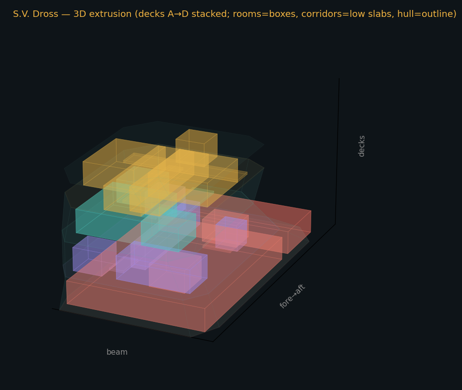
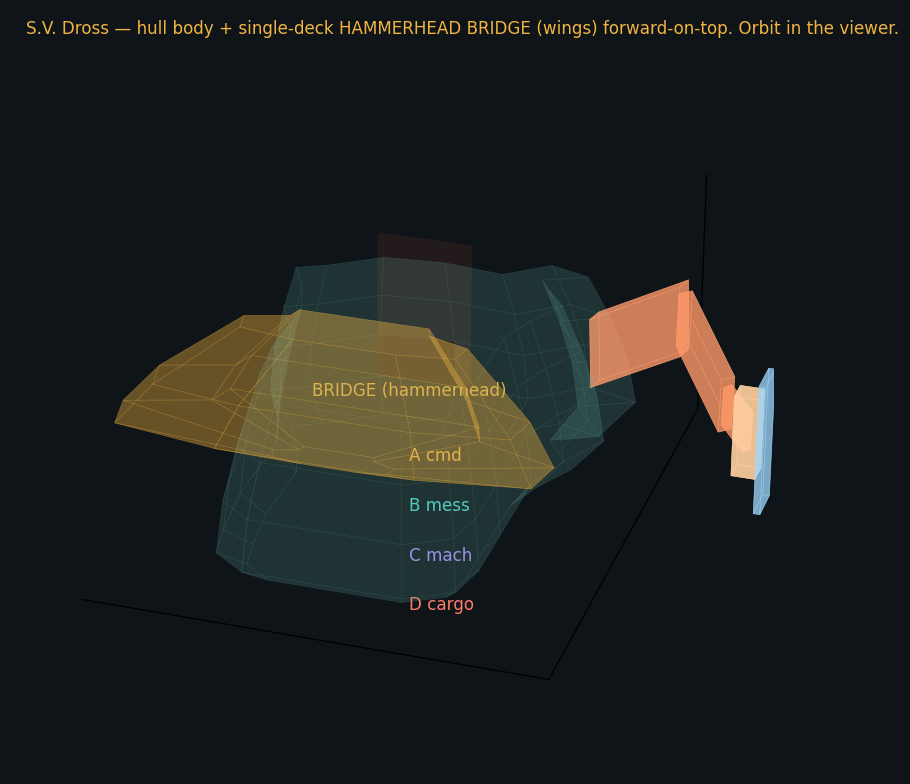

Decks as layers — rooms clipped to hull. Isometric stack (A command on top → D cargo on the bottom); each room is a 3D box whose outboard walls follow the shell angle.

Decks as layers — with hull envelope. Same stack with the hull ghosted around it; rooms = boxes, corridors = low slabs. Now live and orbitable, built from the current maps: ▶ Open the interactive 3D decks

Exterior hull. The shell as a 3D mesh — hammerhead bridge with wings forward-on-top, fat spine, swollen aft cargo bulb, and the external maw boom. Decks labelled A cmd → D cargo.Interactive textured model. Orbit and zoom the textured hull in your browser (three.js; needs internet for the library). Baseline naive bake.
▶ Open the orbit viewer